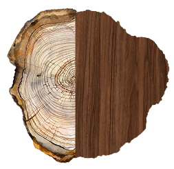
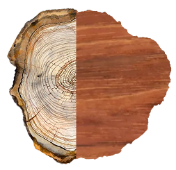
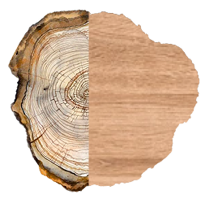
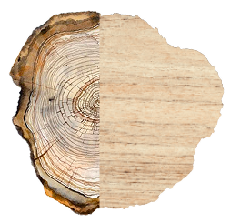
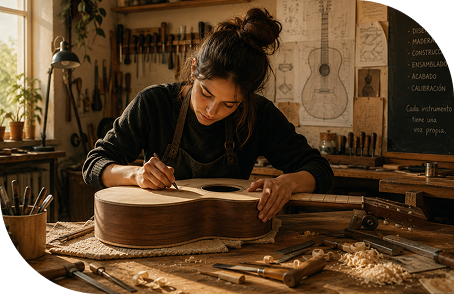

La luthería combina conocimientos técnicos, trabajo artesanal y una gran comprensión del funcionamiento y
la acústica de cada instrumento, pudiendo asi no solo conservar la identidad sonora de cada instrumento
sino también mantener su funcionamiento.
El corazón del taller
Somos un emprendimiento nacido de la amistad y la pasión por la música. Desde hace más de 10 años nos
dedicamos a la construcción, restauración y calibración de instrumentos de cuerda, compartiendo un mismo
compromiso: crear piezas con identidad propia y transmitir el valor del trabajo artesanal a cada persona
que pasa por nuestro taller.
Cada instrumento comienza con un diseño cuidadoso: estudiamos las proporciones, trazamos las curvas y
planificamos cada detalle para que la forma final sea perfecta en sonido y estética.
Construimos
Construimos
Trabajamos cada componente de nuestros instrumentos de forma artesanal: cortamos, moldeamos,
ensamblamos y damos forma al instrumento respetando las diferentes características de cada madera.
Calibramos
Calibramos
El
último paso es la calibración: ajustamos tensiones, puentes y clavijas hasta lograr la respuesta
acústica exacta que cada instrumento requiere. Una afinación precisa es nuestra firma.
El taller donde cada proyecto encuentra su lugar.
0:00/0:00
Maderas que dan vida al sónido.
Cada especie aporta una personalidad diferente al instrumento. Su densidad, veta y resonancia influyen
directamente en el carácter del sonido.

Palisandro

Algarrobo

Ciprés

Ábeto
Viví la experiencia del taller

Nivel
Inicial4
mesesPresencial
01Construcción
de tu Guitarra Criolla
Aprendé todo el proceso, desde la selección de la madera hasta el ajuste final, acompañado por luthiers
profesionales en cada etapa.
"El curso superó mis expectativas. Aprendimos cada etapa del proceso con mucha dedicación y siempre acompañados por los profesores. Escuchar el primer acorde de una guitarra construida con mis propias manos fue un momento inolvidable."
Luciana Martinez
Alumno 2025
“
"Es un taller único. Los profesores te transmiten no solo la técnica sino la pasión por la luthería. Salí del curso con conocimientos sólidos y un instrumento de calidad profesional creado por mí."
Sebastián Gómez
Alumno 2024
“
"La atención a los detalles y la paciencia para enseñar son increíbles. Recomiendo este taller a cualquier amante de la música que quiera conectar con su instrumento desde su origen."
María Luz Peralta
Alumno 2025
“
"Calibrar mi propia guitarra bajo la supervisión de un maestro luthier cambió por completo mi forma de tocar. Excelente ambiente de aprendizaje, herramientas profesionales y gran calidez humana."
Alejandro Ruiz
Alumno 2023
“
"Un viaje hermoso. Trabajar la madera, ver cómo toma forma y finalmente escuchar su sonido es algo mágico. Gracias a todo el taller por guiarme en esta experiencia tan gratificante."
Valeria Rossi
Alumna 2024
Cada instrumento tiene una historia, empecemos la tuya.
Emailtrastes@gmail.com
TallerUruguay 888, San Nicolas, CABA
Completá el formulario y contanos tu proyecto, tu consulta o el curso que te interesa. Estaremos encantados de acompañarte en el primer paso de este recorrido.